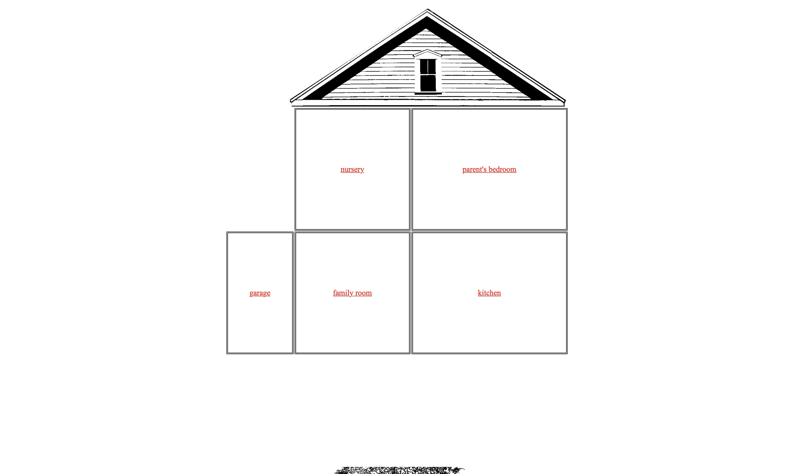

첫 화면

시작했을 때
디자인 분석
인형의 집이라는 제목이 쓰여있고 집 그림이 있다. 시작하면 2층 집의 구조를 보여준다. 지붕만 있고 두 개의 층을 단지 사각형만으로 표현했는데 집이란 것을 화연히 알아볼 수 있다. 다양한 방에 들어가서 가구를 선택할 수 있는데 몇몇 가구들은 클릭했을 때 선택지가 나온다. 단어를 여러 번 선택하면 그에 맞는 사이트로 화면이 이동하거나 영상을 보여준다. 사진이나 의미심장한 글, 시를 보여주기도 한다. 차고에는 벌레가 있고 물음표의 장소에는 알 수 없는 무언가가 썩고 있다는 글 등을 통해 섬뜩함을 연출했다. 화면을 아래로 내려보면 뿌리처럼 보이는 검은 물체가 보인다. 모바일로 접속했을 때는 화면을 움직이지 않아도 바로 볼 수 있다.
돌아가기